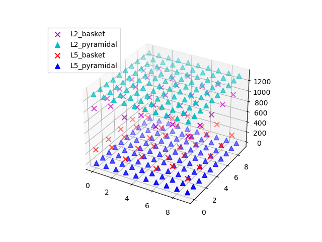
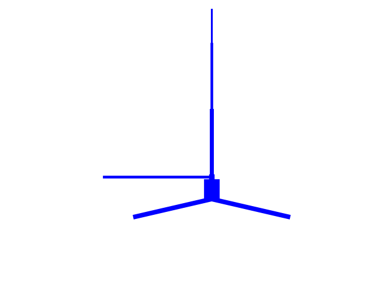
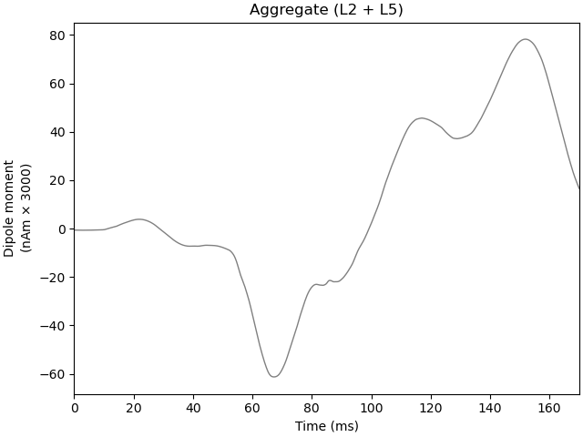
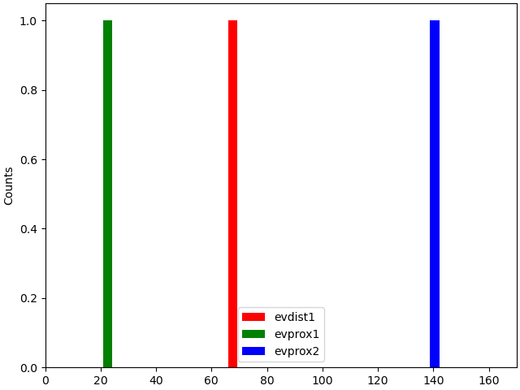

Note
Click here to download the full example code or to run this example in your browser via Binder
01. Simulate Event Related Potentials (ERPs)¶
This example demonstrates how to simulate a threshold level tactile evoked response, as detailed in the HNN GUI ERP tutorial, using HNN-core. We recommend you first review the GUI tutorial.
The workflow below recreates an example of the threshold level tactile evoked response, as observed in Jones et al. J. Neuroscience 2007 [1] (e.g. Figure 7 in the GUI tutorial), albeit without a direct comparison to the recorded data.
# Authors: Mainak Jas <mmjas@mgh.harvard.edu>
# Sam Neymotin <samnemo@gmail.com>
# Blake Caldwell <blake_caldwell@brown.edu>
# Christopher Bailey <cjb@cfin.au.dk>
# sphinx_gallery_thumbnail_number = 3
import os.path as op
import tempfile
import matplotlib.pyplot as plt
Let us import hnn_core
import hnn_core
from hnn_core import simulate_dipole, jones_2009_model
from hnn_core.viz import plot_dipole
Let us first create our default network and visualize the cells inside it.
net = jones_2009_model()
net.plot_cells()
net.cell_types['L5_pyramidal'].plot_morphology()
- 
- 
<Axes3DSubplot:>
The network of cells is now defined, to which we add external drives as required. Weights are prescribed separately for AMPA and NMDA receptors (receptors that are not used can be omitted or set to zero). The possible drive types include the following (click on the links for documentation):
First, we add a distal evoked drive
weights_ampa_d1 = {'L2_basket': 0.006562, 'L2_pyramidal': .000007,
'L5_pyramidal': 0.142300}
weights_nmda_d1 = {'L2_basket': 0.019482, 'L2_pyramidal': 0.004317,
'L5_pyramidal': 0.080074}
synaptic_delays_d1 = {'L2_basket': 0.1, 'L2_pyramidal': 0.1,
'L5_pyramidal': 0.1}
net.add_evoked_drive(
'evdist1', mu=63.53, sigma=3.85, numspikes=1, weights_ampa=weights_ampa_d1,
weights_nmda=weights_nmda_d1, location='distal',
synaptic_delays=synaptic_delays_d1, event_seed=274)
Then, we add two proximal drives
weights_ampa_p1 = {'L2_basket': 0.08831, 'L2_pyramidal': 0.01525,
'L5_basket': 0.19934, 'L5_pyramidal': 0.00865}
synaptic_delays_prox = {'L2_basket': 0.1, 'L2_pyramidal': 0.1,
'L5_basket': 1., 'L5_pyramidal': 1.}
# all NMDA weights are zero; pass None explicitly
net.add_evoked_drive(
'evprox1', mu=26.61, sigma=2.47, numspikes=1, weights_ampa=weights_ampa_p1,
weights_nmda=None, location='proximal',
synaptic_delays=synaptic_delays_prox, event_seed=544)
# Second proximal evoked drive. NB: only AMPA weights differ from first
weights_ampa_p2 = {'L2_basket': 0.000003, 'L2_pyramidal': 1.438840,
'L5_basket': 0.008958, 'L5_pyramidal': 0.684013}
# all NMDA weights are zero; omit weights_nmda (defaults to None)
net.add_evoked_drive(
'evprox2', mu=137.12, sigma=8.33, numspikes=1,
weights_ampa=weights_ampa_p2, location='proximal',
synaptic_delays=synaptic_delays_prox, event_seed=814)
Now let’s simulate the dipole, running 2 trials with the
Joblib backend.
To run them in parallel we could set n_jobs to equal the number of
trials. The Joblib backend allows running the simulations in parallel
across trials.
from hnn_core import JoblibBackend
with JoblibBackend(n_jobs=2):
dpls = simulate_dipole(net, tstop=170., n_trials=2)
Joblib will run 2 trial(s) in parallel by distributing trials over 2 jobs.
Rather than reading smoothing and scaling parameters from file, we recommend
explicit use of the smooth() and
scale() methods instead. Note that both methods
operate in-place, i.e., the objects are modified.
window_len, scaling_factor = 30, 3000
for dpl in dpls:
dpl.smooth(window_len).scale(scaling_factor)
Plot the amplitudes of the simulated aggregate dipole moments over time
import matplotlib.pyplot as plt
fig, axes = plt.subplots(2, 1, sharex=True, figsize=(6, 6),
constrained_layout=True)
plot_dipole(dpls, ax=axes[0], layer='agg', show=False)
net.cell_response.plot_spikes_hist(ax=axes[1],
spike_types=['evprox', 'evdist'])
/home/circleci/miniconda/envs/testenv/lib/python3.7/site-packages/hnn_core/viz.py:376: VisibleDeprecationWarning: Creating an ndarray from ragged nested sequences (which is a list-or-tuple of lists-or-tuples-or ndarrays with different lengths or shapes) is deprecated. If you meant to do this, you must specify 'dtype=object' when creating the ndarray.
np.array(cell_response._spike_times)[trial_idx])
/home/circleci/miniconda/envs/testenv/lib/python3.7/site-packages/hnn_core/viz.py:378: VisibleDeprecationWarning: Creating an ndarray from ragged nested sequences (which is a list-or-tuple of lists-or-tuples-or ndarrays with different lengths or shapes) is deprecated. If you meant to do this, you must specify 'dtype=object' when creating the ndarray.
np.array(cell_response._spike_types)[trial_idx])
<Figure size 600x600 with 2 Axes>
If you want to analyze how the different cortical layers contribute to
different net waveform features, then instead of passing 'agg' to
layer, you can provide a list of layers to be visualized and optionally
a list of axes to ax to visualize the dipole moments separately.
plot_dipole(dpls, average=False, layer=['L2', 'L5', 'agg'], show=False)
<Figure size 640x480 with 3 Axes>
Now, let us try to make the exogenous driving inputs to the cells
synchronous and see what happens. This is achieved by setting
n_drive_cells=1 and cell_specific=False when adding each drive.
net_sync = jones_2009_model()
n_drive_cells=1
cell_specific=False
net_sync.add_evoked_drive(
'evdist1', mu=63.53, sigma=3.85, numspikes=1, weights_ampa=weights_ampa_d1,
weights_nmda=weights_nmda_d1, location='distal', n_drive_cells=n_drive_cells,
cell_specific=cell_specific, synaptic_delays=synaptic_delays_d1, event_seed=274)
net_sync.add_evoked_drive(
'evprox1', mu=26.61, sigma=2.47, numspikes=1, weights_ampa=weights_ampa_p1,
weights_nmda=None, location='proximal', n_drive_cells=n_drive_cells,
cell_specific=cell_specific, synaptic_delays=synaptic_delays_prox, event_seed=544)
net_sync.add_evoked_drive(
'evprox2', mu=137.12, sigma=8.33, numspikes=1,
weights_ampa=weights_ampa_p2, location='proximal', n_drive_cells=n_drive_cells,
cell_specific=cell_specific, synaptic_delays=synaptic_delays_prox, event_seed=814)
You may interrogate current values defining the spike event time dynamics by
print(net_sync.external_drives['evdist1']['dynamics'])
{'mu': 63.53, 'sigma': 3.85, 'numspikes': 1}
Finally, let’s simulate this network. Rather than modifying the dipole object, this time we make a copy of it before smoothing and scaling.
dpls_sync = simulate_dipole(net_sync, tstop=170., n_trials=1)
trial_idx = 0
dpls_sync[trial_idx].copy().smooth(window_len).scale(scaling_factor).plot()
net_sync.cell_response.plot_spikes_hist()
- 
- 
Joblib will run 1 trial(s) in parallel by distributing trials over 1 jobs.
Loading custom mechanism files from /home/circleci/miniconda/envs/testenv/lib/python3.7/site-packages/hnn_core/mod/x86_64/.libs/libnrnmech.so
Building the NEURON model
[Done]
Trial 1: 0.03 ms...
Trial 1: 10.0 ms...
Trial 1: 20.0 ms...
Trial 1: 30.0 ms...
Trial 1: 40.0 ms...
Trial 1: 50.0 ms...
Trial 1: 60.0 ms...
Trial 1: 70.0 ms...
Trial 1: 80.0 ms...
Trial 1: 90.0 ms...
Trial 1: 100.0 ms...
Trial 1: 110.0 ms...
Trial 1: 120.0 ms...
Trial 1: 130.0 ms...
Trial 1: 140.0 ms...
Trial 1: 150.0 ms...
Trial 1: 160.0 ms...
<Figure size 640x480 with 1 Axes>
Warning
Always look at dipoles in conjunction with raster plots and spike histogram to avoid misinterpretation.
Run multiple trials of your simulation to get an average of different drives seeds before drawing conclusions.
References¶
Total running time of the script: ( 1 minutes 46.144 seconds)